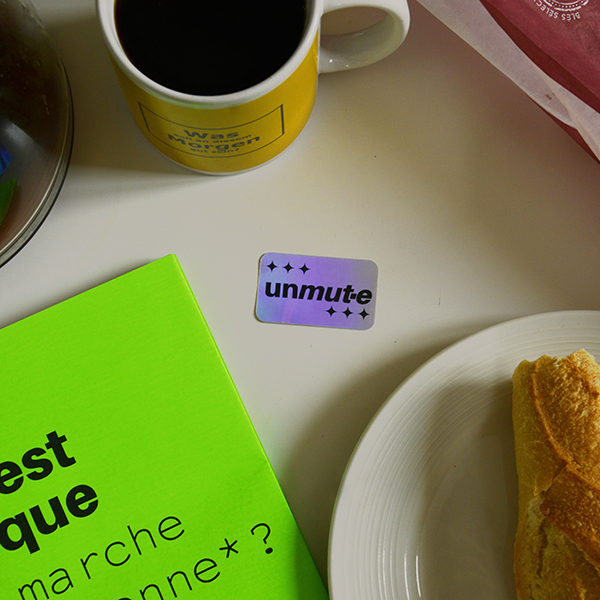
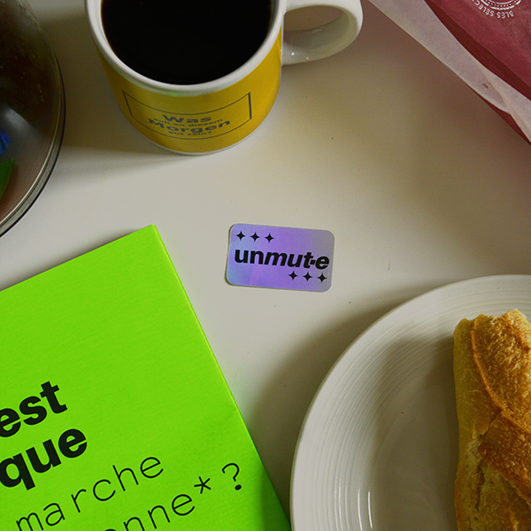
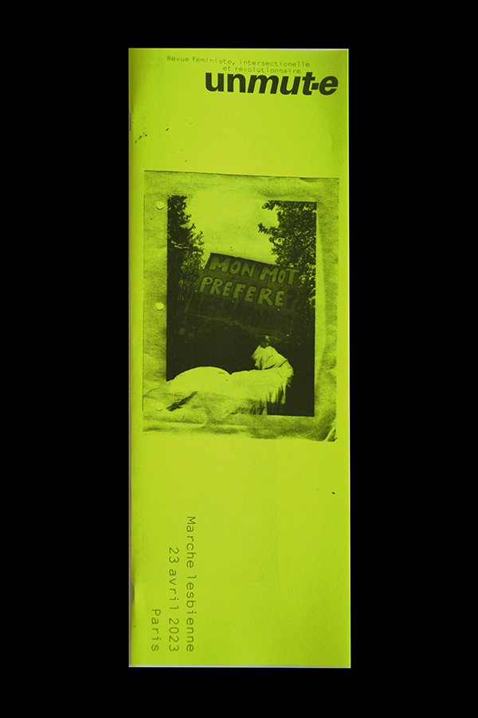
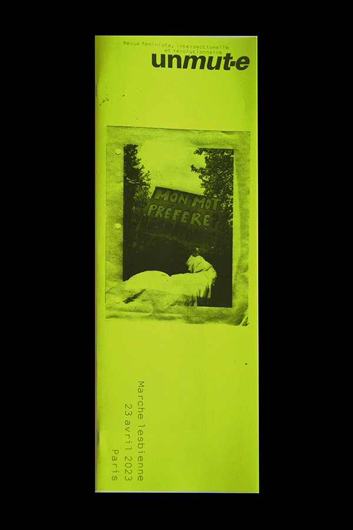

unmut· e
unmut· e est une revue féministe intersectionelle et révolutionnaire.
⁂ unmut· e est un ensemble de fanzines, affiches, stickers, flyers… et tout autre support pouvant aider à la diffusion d’un message militant autour des manifestations.
⁂ unmut· e est également un souci d’archiver les luttes queer-féministes. Le site unmut· e sera une longue liste de slogans que nous/vous avez pu utiliser au sein de manifestations. En effet, nous recensons le maximum de slogans que nous avons pu observer en manifestations ou sur les réseaux sociaux. Cette liste non-exhaustive aura prochainement besoin de vous mais nous reviendrons là-dessus d’ici quelques mois.
⁂ unmut· e est initialement un projet de fin d’études d’un master en design graphique, le projet initial consistait en une revue disponible 3 fois par an. Le projet va petit à petit s’en éloigner et venir tenter de diffuser le plus de supports possibles en plus de ces revues.
Retrouvez unmut· e sur Instagram !
▷ Font : Amiamie de Mirat-Masson et NotCourier Sans de Open Source Publishing (Ludivine Loiseau)
▷ Juillet 2023
unmut· e
 

 
